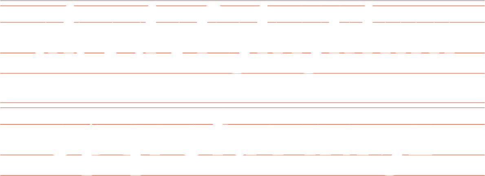
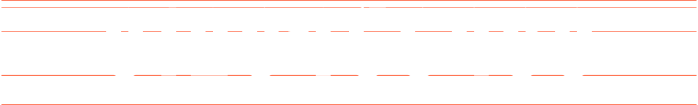
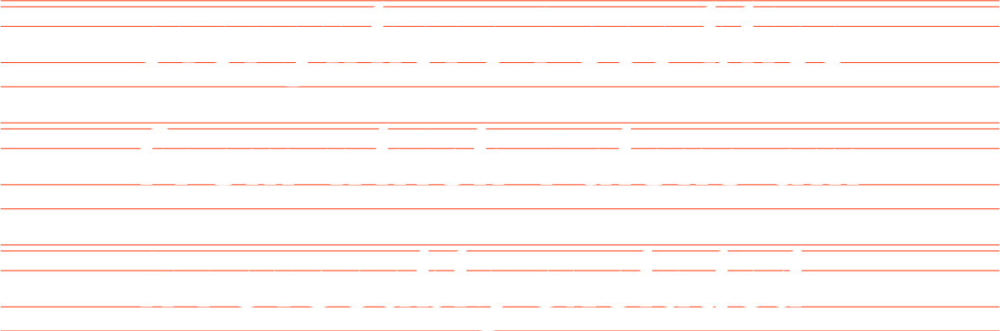

introducing FRANKENSTEIN
프랑켄슈타인
'FRANKENSTEIN'
is a typeface designed after
Mary Shelly’s novel, 'frankenstein, 1818'
마리 쉘리의 소설 <프랑켄슈타인, 1818>의 영감을 받아 제작된 글자체이다.
CONCEPT
hover를 적용하는게 나을지 고민중
b
b
b
b
b
blackletter
- 교수님ㅠ img에서 먹히는 스타일이 svg는 안되는거같아요
- z-index/position sticky,absolute 등..
b
b
sans serif
- 교수님ㅠ img에서 먹히는 스타일이 svg는 안되는거같아요
- z-index/position sticky,absolute 등..
b
과학자 빅터가 죽은 자들을 조립해 새로운 생명체를 만들어내었듯이
두 가지 글자체의 형태적 특성을 하나로 융합해 디자인한 글자체이다.
A to Z
탭메뉴를 이용해 그리드를 껐다 켰다 하게 만들고싶어요
b

numbers
b

words
b
sentence
문장 하나 더 추가할지도
b
